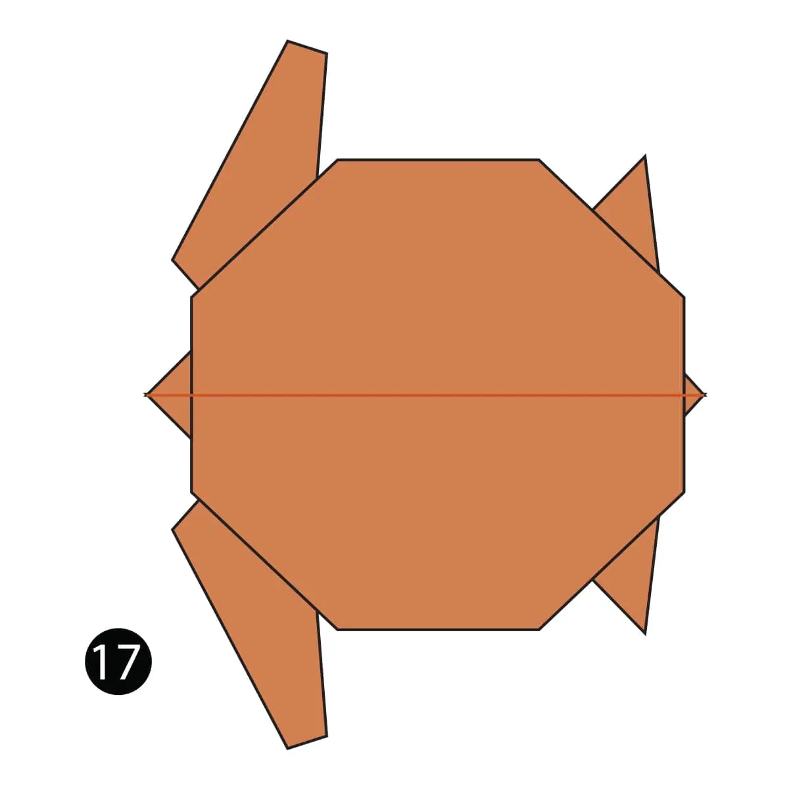

camel
- Camels can completely shut their nostrils during sandstorms
- Mother camels carry their calves up to 14 months before giving birth.
- When a camel finally does find water, he can drink up to 40 gallons in one go

Interesting Facts about pigeon
- Pigeons have been known to live over 30 years
- A full grown pigeon has 10,000 feathers.
- Pigeons can navigate via the earth’s magnetic fields

Interesting Facts about Flying cicada
- Cicadas can survive a huge fall as babies, or nymphs. They are about the size of a grain of rice when they drop from a tree branch to the ground and start digging.
- They’re true bugs (from the order Hemiptera). So you can call them a bug and be scientifically accurate.
- Most have red-orange eyes. But occasionally cicadas have blue, white or grayish eyes. Keep on the lookout.

Interesting Facts about chameleon
- Their feet work like salad tongs.
- chameleons vary wildly in terms of size.
- Skin crystals enable them to change color at will.

Interesting Facts about panda
- A panda Can Poop 28 Kilos per day.
- You can see panda babies in August.
- Pandas have 6 toes to grasp bamboo.

Interesting Facts about teddy bear
- The Teddy Bears' Picnic song was originally called The Teddy Bear Two Step.
- The story of Goldilocks And The Three Bears was written in 1837 by Robert Southey who was the Poet Laureate at the time.
- In 1902 in Germany, Steiff launched “Bear 55 PB”, the first toy bear with jointed arms and legs.

Interesting Facts about turtle
- Turtles belong to one of the oldest reptile groups in the world – beating snakes, crocodiles and alligators.
- These creatures date back to the time of the dinosaurs, over 200 million years ago – woah.
- Turtles are easily recognised by their bony, cartilaginous shell. This super-tough casing acts like a shield to protect them from predators – some turtles can even tuck their head up inside their shell for extra protection.
swan
- They are huge! Trumpeter swans are the largest native waterfowl and the heaviest flying birds in North America.
- They have their own constellation.
- They are very territorial during mating season.
gorila
- Around 1,063 exist in the wild.
- We share around 98% of our DNA with gorillas.
- They can eat all day long.